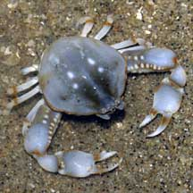
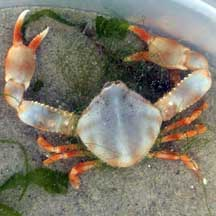
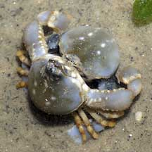
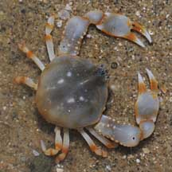
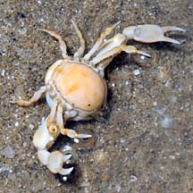
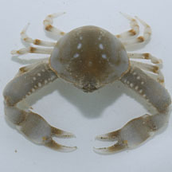
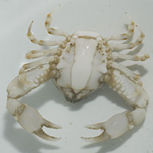
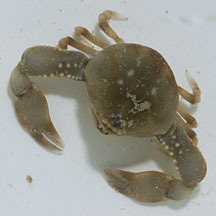
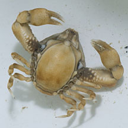

|
|
| crabs text index | photo index |
| Phylum Arthropoda > Subphylum Crustacea > Class Malacostraca > Order Decapoda > Brachyurans |
| Pebble
crabs Family Leucosiidae updated Jan 2020 Where seen? These crabs really do resemble tiny pebbles and are sometimes seen on our Northern shores. Silty, sandy areas near seagrasses. They are usually buried under the sand. Features: Body width 1-2cm. Body smooth somewhat rhomboid, indeed resembling a tiny pebble. The head forms a blunt pointed tip with a pair of tiny eyes. In this way, its eyes can peep out while the rest of the crab is buried underground. It has powerful long flat pincers with pointed claws. The crab can bury itself in the sand very rapidly. Some may be colourful. |
 Changi, Apr 08 |
 Seulocia vittata Chek Jawa, Jan 02 |
 Leucosia anatum Mating pebble crabs Changi, Jul 05 |
| According to the Singapore Red Data Book, the Rubble crab (Favus
granulatus) is known only from Singapore and was a new genus and
species discovered from Singapore and is not yet known elsewhere.
It was found on Siloso Beach of Sentosa which has since been 'improved',
and Pulau Semakau. Alox somphos, a related species in another
genus was also first described from Singapore. Status and threats: Some of our pebble crabs are listed as 'Endangered' on the Red List of threatened animals of Singapore. Like other creatures of the intertidal zone, they are affected by human activities such as reclamation and pollution. Trampling by careless visitors also have an impact on local populations. |
| Pebble crabs on Singapore shores |
On wildsingapore
flickr
|
| Other sightings on Singapore shores |
 Leucosia anatum  Changi, Jul 08 |
 Leucosia anatum  Changi, May 12 |
 Leucosia anatum  Changi, Jul 12 |
| Family
Leucosiidae recorded for Singapore from Wee Y.C. and Peter K. L. Ng. 1994. A First Look at Biodiversity in Singapore ++from The Biodiversity of Singapore, Lee Kong Chian Natural History Museum. in red are those listed among the threatened animals of Singapore from Davison, G.W. H. and P. K. L. Ng and Ho Hua Chew, 2008. The Singapore Red Data Book: Threatened plants and animals of Singapore. ^from WORMS +Other additions (Singapore Biodiversity Records, etc)
|
| Acknowledgements With grateful thanks to Ondrej Radosta for identifying the species of the crabs on this page. Links
|